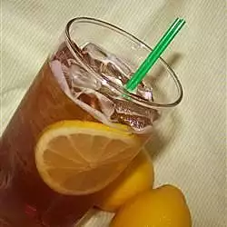

Tea

Description
The Texas part of the tea comes from the tequila as opposed to a Long Island iced tea, which uses gin instead of tequila. This is the standard Bartender's recipe for a Texas Tea.
- Vodka
- Lime
- Tequila
- Triple sec
- Sweet-and-sour mix
- Rum
- Cola
- Lemon
Lime
- In a tall glass filled with ice, combine vodka, rum, tequila and triple sec. Top with equal parts sweet-and-sour and cola. Squeeze juice of lemon wedge and lime wedge over top; stir.